ユニバーサルデザイン
-
フラットフロア
つまずいて転倒するなど住戸内での思わぬ事故を防ぐために、住戸内の床段差を極力なくしたフラットフロアを実現しました。
※玄関、バスルーム、バルコニーの出入口を除く。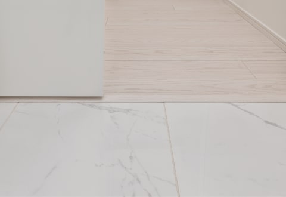参考写真1
-
低床型ユニットバス
浴槽へのまたぎ高を約430㎜に抑え、出入口の段差も極力解消した、低床設計のユニットバスを採用しました。さらに、壁には手すりを設置した、人にやさしい仕様です。
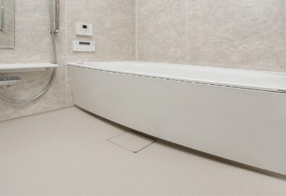参考写真1
-
手すり／手すり取付下地補強
バスルームには手すり、玄関や廊下、トイレには手すり取付下地補強を施しています。※手すり取付下地補強は一部分のみ。
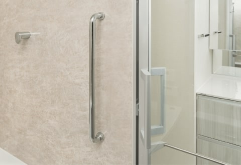参考写真1
-
参考写真1
-
参考写真1
-
参考写真1
-
プッシュプルドアハンドル
ドアハンドルを回す必要がなく「押す・引く」だけで開閉できる、プッシュプル式のドアハンドルを採用しています。
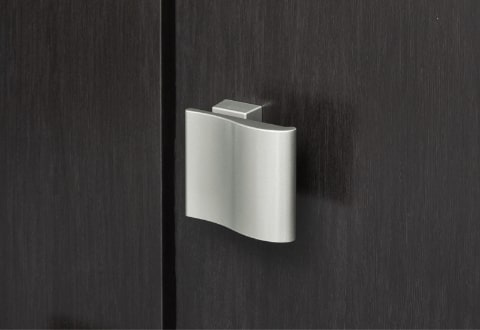参考写真1
-
人感センサー照明
玄関には、人が入るとセンサーが感知して、照明が自動点灯する、人感センサー照明を採用しました。
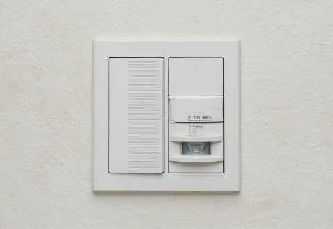参考写真1
-
ハンズフリーキー
主なオートロックドアには、鍵をカバンやポケットに入れたままで解錠可能な、ハンズフリーキーを採用。※周辺通行時の意図しない解錠・誤作動防止のため、設置箇所により認証方法・検知範囲が異なります。また、検知範囲には限度があり、構造上、動線がカバーされていない箇所もあります。
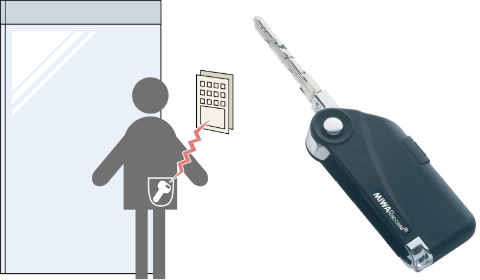参考写真2
（概念図）
-
車椅子利用者対応エレベーター
車椅子などでの利用に配慮して、正面壁面は鏡貼りとし、エレベーター内に手摺を設置。また、カゴ内と乗場の低い位置に車椅子専用ボタンを設けています。
-
ユニバーサル対応エレベーター
車椅子などでの利用に配慮して、正面壁面の中央部は鏡貼りとしています。エレベーター内の片側低い位置に専用操作盤を設置し、乗場の操作ボタンを低い位置に下げて設置しています。
快適提案
-
最大約2,600mm～約2,750mmの天井高
（リビング・ダイニング、洋室）天井高最大約2,600mm～約2,750mmを確保しました。天井を高くすることにより、同じ面積でも、空間の広がりが感じられるよう配慮した、開放感あふれる設計です。
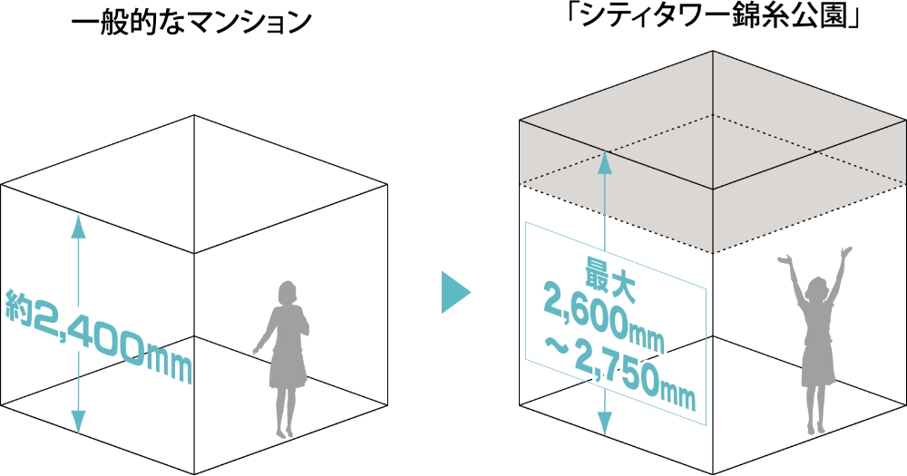（概念図）
二重床・二重天井
住戸内を二重床・二重天井とすることで、配管・配線のコンクリートスラブへの打込みを減らし、将来のリフォームやメンテナンスへの対応に配慮しています。※玄関、シューズインクロゼット、パイプスペース、バスルームの床を除く。
ペット足洗い場
散歩で汚れたペットの足を清潔に保つペット専用の足洗い場を設けました。
-
透明耐熱強化ガラス
一部住戸には、透明耐熱強化ガラスを採用し、眺望を妨げる網をなくすと同時に強化処理を加えた防火ガラスとなっています。また万一割れた際には破片が細かく砕けるので、安全性にも優れています。※詳細は係員にお尋ねください。
中空スラブ工法
一住戸の主な床スラブは中空スラブ工法を採用しました。天井に梁の出張りが少ない住空間となります。※スラブの厚さは場所により異なります。
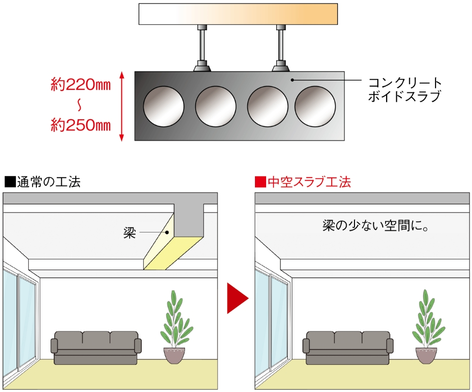（概念図）
（概念図）
-
アウトフレーム設計
躯体柱をリビング・ダイニング、洋室の外に出したアウトフレーム設計を採用しました。家具のレイアウトなどスペースが有効活用できます。※室内の壁の形状は概念図上では一部省略しています。詳細は図面集をご確認ください。
※主開口部側のみ。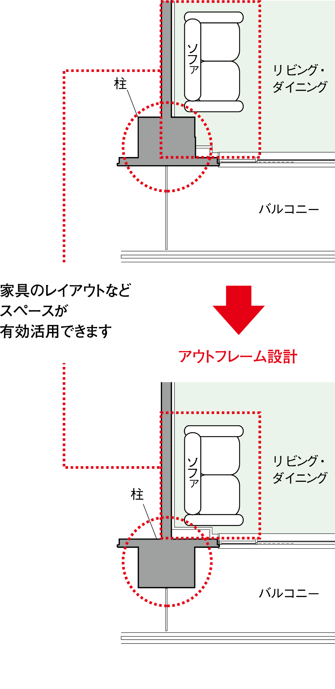 -
各階ゴミ置場
各階フロアにゴミ置場（粗大ゴミを除く）を設けています。お住まいのフロアで24時間ゴミ出しができるので大変便利です。
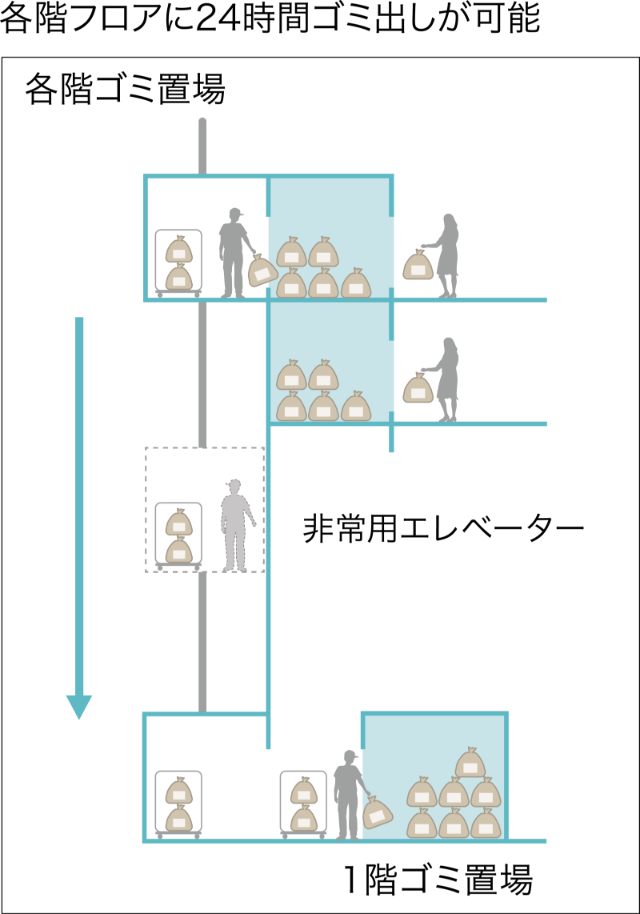（概念図）
無線LAN給湯リモコン
専用アプリケーションを使ってお手元のスマートフォンから給湯器・床暖房などの操作や機器の状態をどこからでも確認することができます。※1 帰宅途中にスマートフォンからお湯はり・追い焚きをしておけば、帰ってすぐお風呂に入れます。また、寒い冬の日は床暖房を運転ONにしておけば、家に帰るころにはお部屋あたたか。
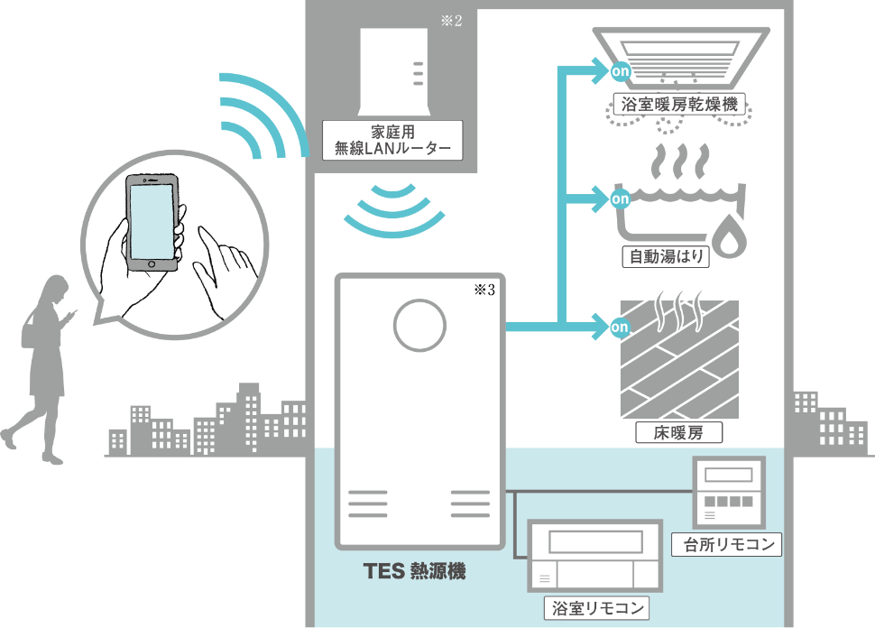（概念図）
※1. ご利用には予め準備が必要な事項もございます。詳細につきましては取扱説明書をご確認ください。
※2. 家庭用無線LANルーターは別途ご用意頂く必要がございます。
※3. 機器ごとによって仕様・接続方法が異なりますので、詳細につきましては取扱説明書をご確認ください。 -
ダブルオープンフレキシブルプラン
リビング・ダイニングと隣接する洋室を可動式間仕切り扉で開放的な一体空間にもプライバシーの保たれた個室にも変更可能なダブルオープンフレキシブルプランを採用しました。リビング・ダイニングとの一体感を高めるため、主開口側であるサッシュ面に余計な袖壁を作らない従来の設計に加え、主開口とは反対側からも単独で開くことができる扉を採用することで洋室のプライベート性や家具レイアウトの自由度が大きくアップしました。ライフスタイルの変化にリフォームすることなく自在に対応できます。
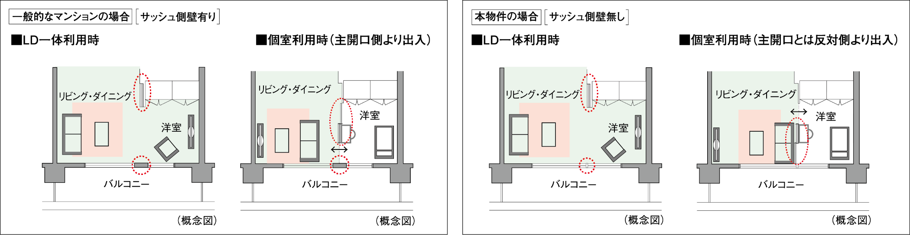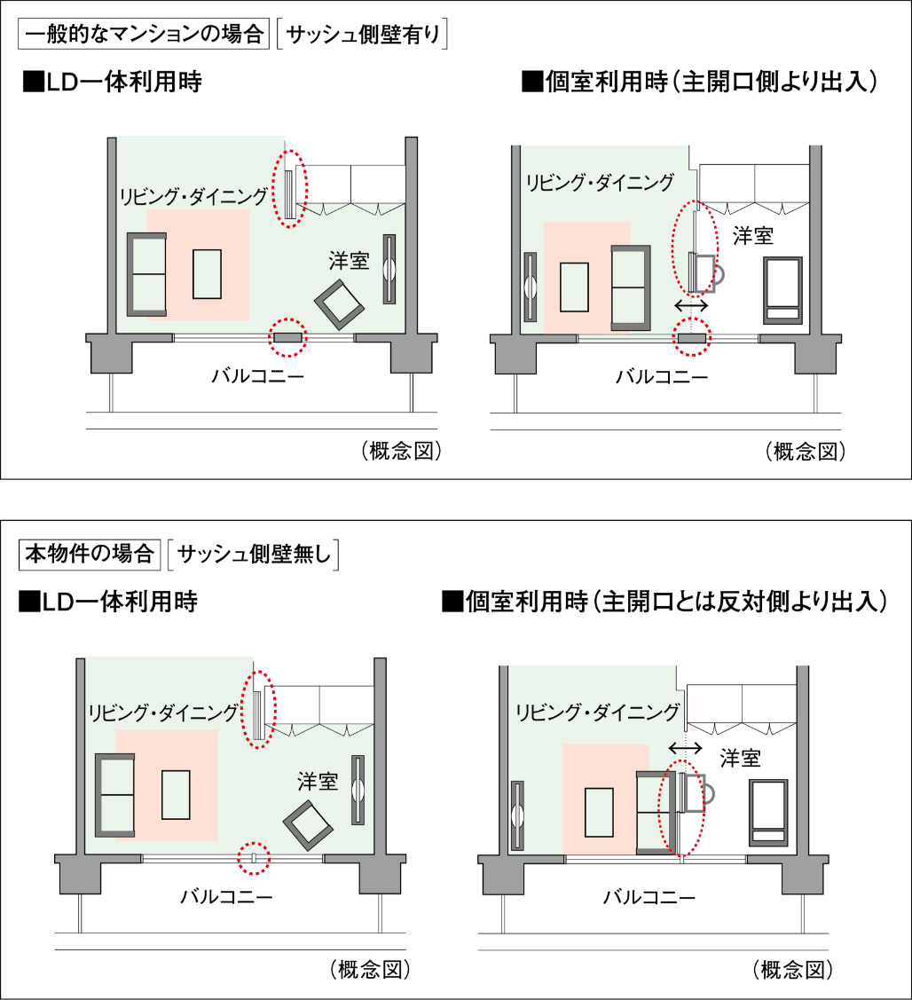メンテナンス／アフターサービス
-
長期修繕計画
実績などに基づいて部位毎に設定した標準の修繕周期をベースに、経年劣化により将来必要となるであろう、各種の修繕工事を予想した「長期修繕計画表（期間は30年間）」を作成します。「長期修繕計画表」は、一定の期間中に予想される修繕工事の費用総額（概算）と、それに対応した修繕積立金の額がひと目で確認できるため、管理組合での的確な資金計画立案が可能になります。工事実施時期が近づくと、管理受託者から管理組合に事前調査を提案。修繕対象の部位について詳細な調査・診断を行ない、予算面の措置も含めた修繕工事計画を作成し、管理組合に提案します。
住まいサポート12 PREMIUM（オプション・有料）
お引き渡しより、通常2年のアフターサービス期間終了後、本来ご自身で対応されることとなる住まいのトラブル対応、住宅設備機器等のリペアやメンテナンス等を、お引渡しより12年間サポートします。※詳しくは係員にお尋ねください。
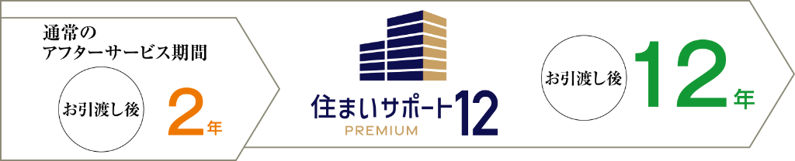※アフターサービス業務規準における補修項目と異なります。
詳しいサービス内容は利用規約をご覧ください。カード決済サービス
マンションの管理費、修繕積立金、駐車場利用料、駐輪場利用料、その他共用施設使用料等のお支払いに、「住友不動産 ショッピングシティイオンカード」によるカード決済がご利用いただけます。管理費等のお支払いでポイントがたまるなど、おトクなサービスです。※カード決済は住友不動産 ショッピングシティイオンカードでのお支払いに限ります。
※カード決済可能な費用の詳細は係員にお尋ねください。
※カードの発行には所定の審査がございます。
※サービス内容は変更となる場合があります。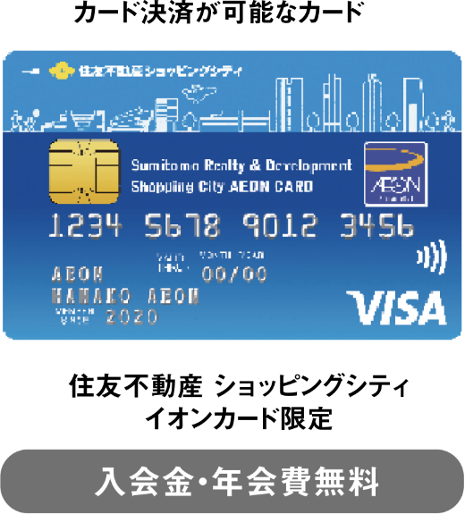 -
住友不動産のアフターサービス
住友不動産では、「お客様センター」・「アフターサービスセンター」を開設し、原則お引渡し後2年間にわたり、お客様センターにて24時間365日体制（水曜・日曜・祝日・年末年始・お盆休暇および17時40分以降は受付のみ）で、アフターサービス業務規準に基づき、お客様へのアフターサービスに対応しています。お部屋のお引渡し後、3ヵ月・1年・2年を目途に定期点検を実施し、ご指摘事項および不具合箇所の補修をします。また、漏水などの緊急事態にも、お客様センターにて受付対応をします。
［お客様センター：0120-093-155］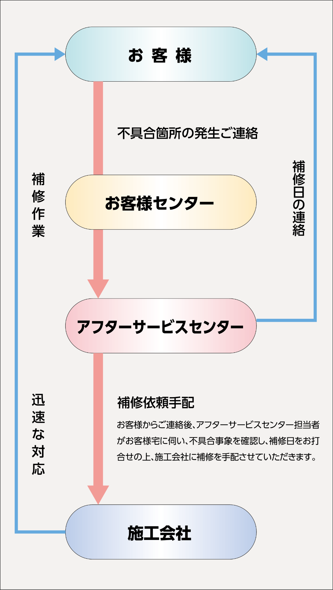（概念図）
サービス
-
宅配ボックス（着荷表示機能付）
留守中に届いた荷物を、24時間いつでも受け取ることができ、宅配物の発送やクリーニングの依頼が行えます。宅配物発送料金・クリーニング料金はクレジットカードで決済することも可能。また、留守中に届いた荷物は住戸内のインターホン親機で着荷表示により確認できます。
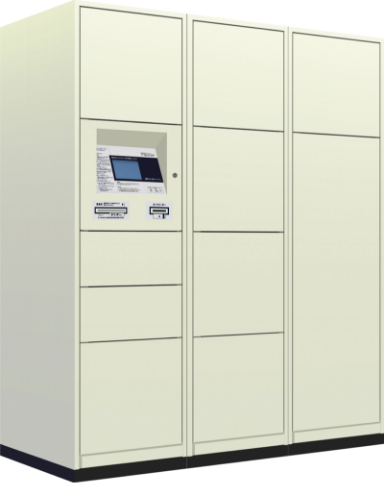参考写真2
-
電気自動車充電設備
駐車場内には、電気自動車・プラグインハイブリッド車の充電に対応した設備を設置し、エコカーをより身近なものとする環境を整えました。※本設備のご利用は有料となります。詳しくは係員にお尋ねください。
（イメージイラスト）
※本イラストはイメージであり、実際のものとは異なります。） -
ライフサポートサービス
ご入居された皆様の「安心」「快適」「便利」をお手伝いさせていただくため、様々なサービスをご用意しました。
駆けつけサポート住友不動産建物サービス㈱の委託会社によるサービスです。
●カギのトラブル ●水まわりのトラブル ●ガラスのトラブル
●パソコンのトラブル ●電気、電球交換、換気フィルター、家具移動※本サービスは有料となります。快適生活サポート住友不動産建物サービス㈱によるサービスです。
●ハウスクリーニング ●消毒・害虫駆除※本サービスは有料となります。（一部地域では提携業者のご紹介となります。）※ご利用エリアにより、サービス内容が制限される場合があります。
また、サービス内容は変更となる場合があります。詳しくは係員にお尋ねください。 -
お引越し無料パック
梱包資材の提供や荷物の搬出・運搬・搬入など、お引越しを無料でサポートします。また、必要に応じて家電の取付けやトランクルームの手配などの各種サービスもオプション（有料）で行います。※サービスのご利用には制限がございます。詳細は係員にお尋ねください。
-
宅配型 外部収納サービス エアトランク
たまにしか使わないモノや大事にとっておきたいモノを"毎回、梱包不要、集荷・配送無料”で預けて、必要な時に玄関先までお届けします。新築物件契約時（現居）よりご利用が可能なため、新居お引っ越しの荷物量だけでなく、引っ越し作業軽減にも役立ちます。初期費用なく、最低契約期間3ヶ月にてご利用いただけます。※本サービスは有料となります。
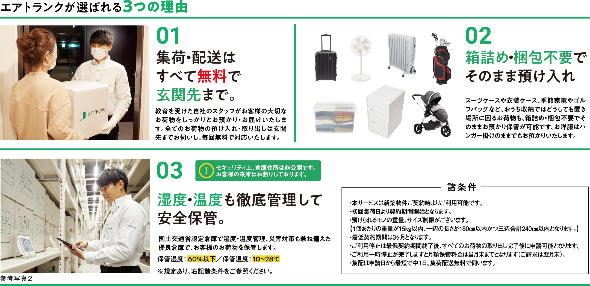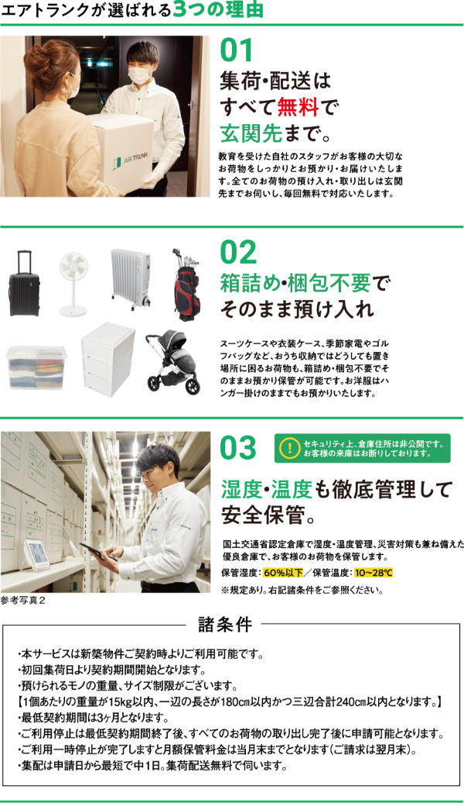下記、サービス提供エリア内のみ採用
・東京：23区全域、調布市、三鷹市、武蔵野市、狛江市 ・埼?：川?市、草加市、??市、?潮市、蕨市 ・神奈川：川崎市、横浜市 ・千葉：浦安市、船橋市、市川市 ・愛知：名古屋市、尾張エリア
・大阪：大阪市、豊中市、吹?市、高槻市、茨木市、箕面市、摂津市、池田市、守口市、門真市、大東市、寝屋川市、枚方市、交野市、四條畷市、三島郡、豊能郡
・兵庫：尼崎市、伊丹市、宝塚市、西宮市、芦屋市、神戸市東灘区、神戸市灘区、神戸市中央区 ※首都圏、愛知、大阪と拠点は３カ所となり、拠点をまたぐ無料配送はできません。
住友不動産建物サービス（株）の提携業者によるサービス
-
空室管理（長期留守宅管理）
住居は長期不在の状態が続くと、カビの繁殖や木材の腐食など老朽化が進んでしまいます。空室管理では定期的にスタッフが巡回し、通気・換気・通水を行います。また、投函物の整理や簡易清掃、災害時の点検・報告も可能です（紹介業者のコース等により異なります）。※本サービスは有料となります。
※管理内容によってご料金が異なります。
※詳細は係員にお尋ねください。 -
プチリフォーム便
住宅設備機器の「古くなった」や「故障した」をパッと交換。また、住宅設備機器の交換だけでなく、床や壁のちょっとしたキズや網戸交換など「お部屋のちょっと困った」にもサッと対応します。住友不動産建物サービス㈱の提携業者によるリーズナブルで安心の対応を致します。※本サービスは有料となります。
※ご依頼内容によって料金が異なります。
※詳細は係員にお尋ねください。
※掲載の参考写真1は本物件と同様仕様のコンセプトルーム（総合マンションギャラリー新橋館）を撮影（2023年1月）したもので、本物件のものではありません。家具・調度品等オプション仕様は販売価格に含まれておりません。
※掲載の参考写真2はメーカーカタログ等の参考写真であり本物件のものではありません。
※設備・仕様はタイプにより異なります。 -